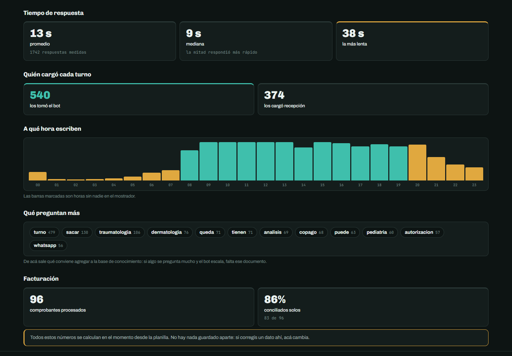
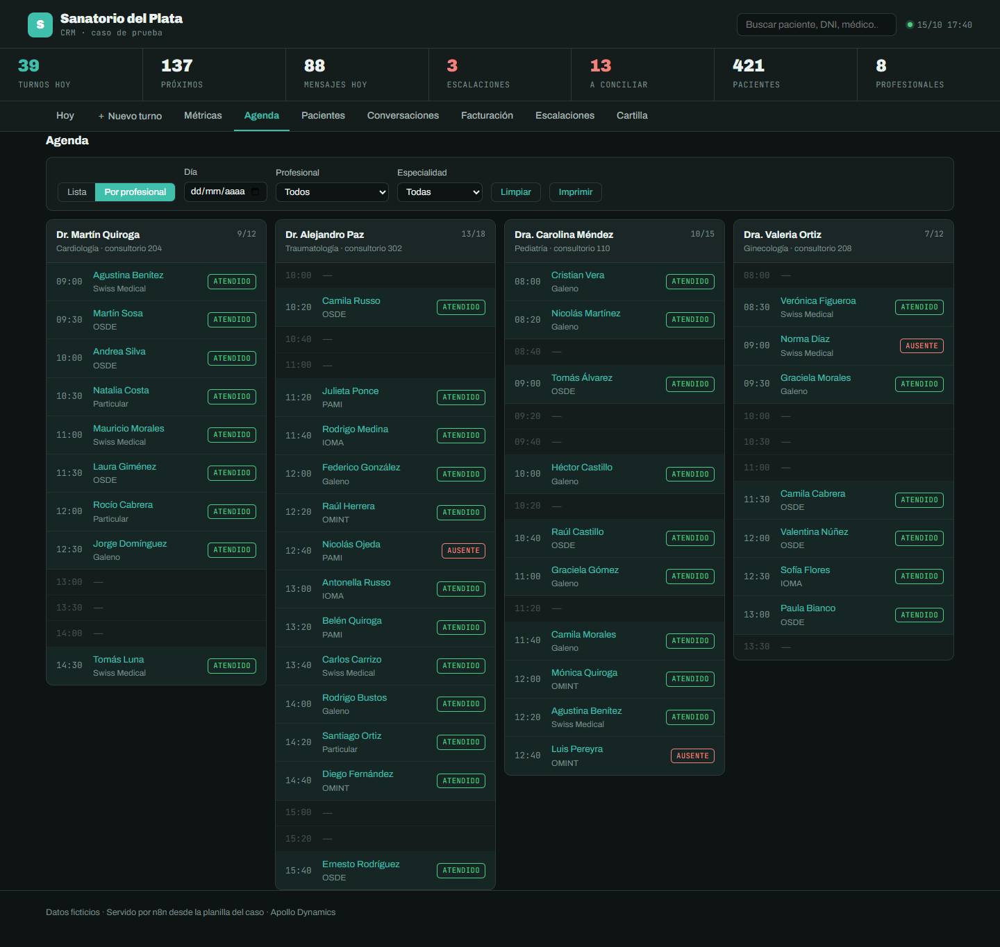
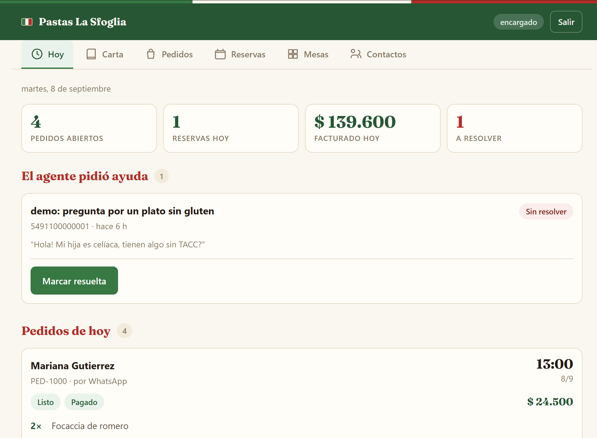
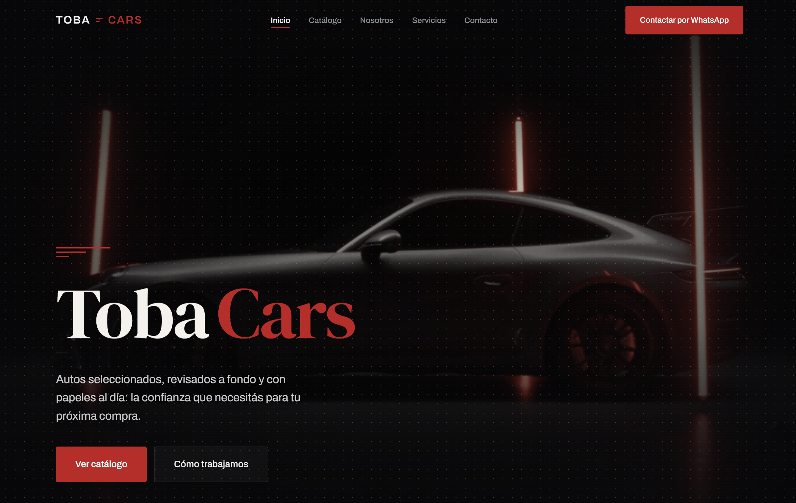

Bienvenido a
Sistemas que potencian tu negocio.
Construimos paneles de gestión, agentes de WhatsApp con IA y automatizaciones para PyMEs, emprendedores y agencias. Sistemas concretos que podés mirar funcionando — no demos que se caen si el cliente pregunta algo fuera del guion.

Lo que medimos, no lo que prometemos
por semana sin nadie en el mostrador de una clínica. Eso es lo que cubre el asistente.
de respuesta mediana sobre 1.742 respuestas, medido por el propio panel del sistema.
sistemas completos construidos y probados de punta a punta.
consultas que quedan sin respuesta. Si el sistema no sabe, avisa a una persona.
Seis cosas que hacemos bien, explicadas en criollo. Si alguna te suena al problema que tenés hoy, entrá y mirá cómo lo resolvemos.
Calidad
Revisamos automatizaciones o agentes que ya tenés — propios o de otro proveedor — para encontrar dónde fallan antes de que lo note un cliente.
Ver servicio →Gestión
Una pantalla propia del negocio donde el equipo ve turnos, pedidos, conversaciones y métricas — con permisos distintos según el rol.
Ver servicio →Atención 24 horas
Un asistente que contesta el WhatsApp del negocio las 24 horas: responde dudas, saca turnos, toma pedidos, y cuando el tema es delicado lo pasa a una persona sin que el cliente lo note.
Ver servicio →Procesos
Conectamos las herramientas que ya usás — WhatsApp, planillas, bases, pagos, calendarios — para que los avisos, recordatorios y reportes pasen solos.
Ver servicio →Ventas
Mide qué tan cerca está cada consulta de comprar — frío, tibio o caliente — con un puntaje explicado, y dispara el seguimiento correcto para cada caso.
Ver servicio →Presencia digital
Hechos a mano, no con plantillas de constructor: livianos, rápidos, bien en el celular, con botón de WhatsApp y una estructura pensada para convertir.
Ver servicio →Trabajamos en etapas chicas y demostrables. Nunca vas a estar esperando meses para ver si funciona.
Entendemos el proceso real del negocio — no lo que debería pasar, sino lo que pasa hoy: dónde se pierden clientes y qué tareas comen más tiempo.
Construimos en etapas. Cada una termina en algo que se puede probar funcionando, no en una promesa a futuro.
Antes de entregar probamos con casos límite: preguntas fuera de tema, intentos de romperlo, situaciones delicadas, entre otras cosas.
El sistema se entrega con sus métricas: cuántas conversaciones resuelve, cuánto tiempo ahorró, cuánta atención hubo fuera del horario.
Lo integramos al WhatsApp, las planillas y las herramientas que el negocio ya usa, y lo lanzamos de forma gradual para que el equipo lo adopte sin frenar las operaciones.
Dejamos manuales pensados para cada persona que va a usar el sistema.
Cuatro proyectos propios, con marcas y datos ficticios, construidos para demostrar de qué somos capaces. Todavía no son clientes reales — lo decimos de entrada, porque el punto no es el testimonio: es que el sistema existe y se puede abrir.

Caso insignia · Clínicas
Recepcionista de WhatsApp que saca turnos según la disponibilidad real de cada médico, lee comprobantes de pago, manda recordatorios y reconoce una urgencia para mandarla a la guardia en vez de darle un turno.
Ver el caso completo →
Gastronomía
Toma pedidos y reservas por WhatsApp como lo haría un empleado: conoce el menú y lo agotado en tiempo real, valida horarios de retiro y jamás ofrece un plato que no hay. Con carta pública que se actualiza sola.
Ver el caso completo →Esquema del panel de calificación — capturas en el caso
Venta con IA
Landing de un producto con un asistente que responde objeciones y, cuando detecta intención real de compra, pide el contacto y lo califica con un puntaje explicado. Según el resultado dispara solo el seguimiento correcto.
Ver el caso completo →
Sitio a medida
Sitio de venta para una concesionaria, hecho a mano sin plantillas: catálogo filtrable por tipo de vehículo, WhatsApp en cada punto de contacto, accesible con teclado y lectores de pantalla, rápido en cualquier celular.
Ver el caso completo →Contanos qué pasa hoy en tu negocio: clientes que se pierden, tiempo que se va en tareas repetidas, o gestión desordenada. La primera charla es para entender el proceso, no para venderte nada.
Canal principal
Te contesta una persona. Si estamos ocupados, te contesta el sistema y te avisamos igual.
Abrir WhatsApp